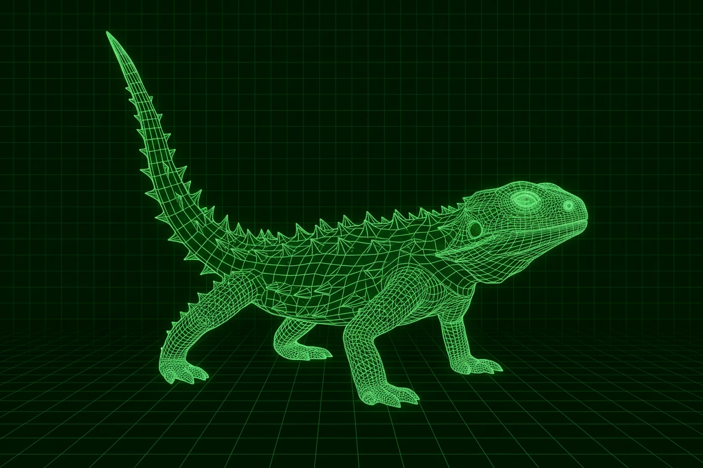
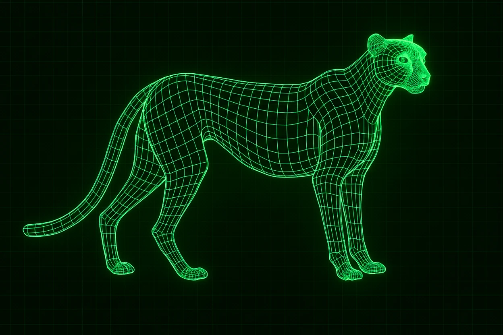
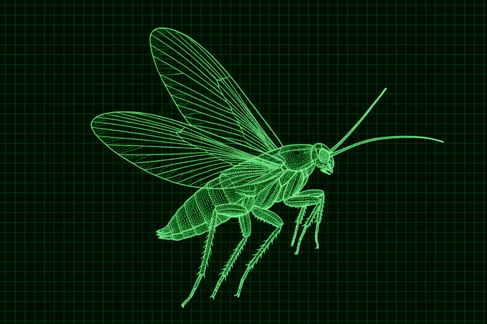
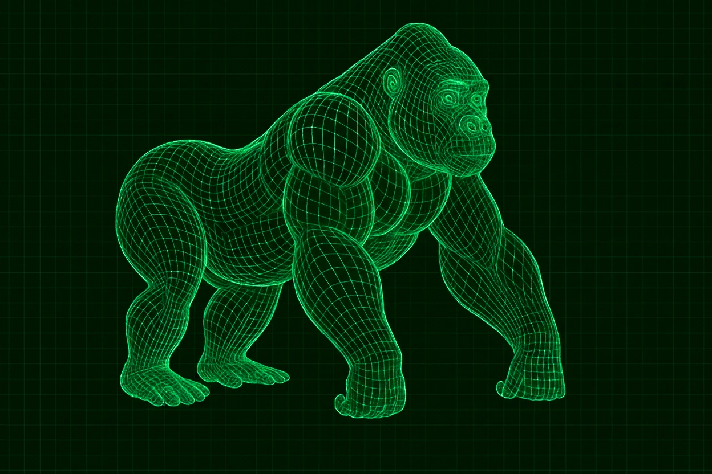

MODERN AGE GRIFFIN / 2025 — 2076
ALARM
Five specimens. One body.
A post-apocalyptic observation system. Five animal figures bring together the capacities needed to survive the threats of the present. Each channel connects a contemporary concern to a part of the griffin’s body.
Multi-channel digital installation · Video, live data and 3D sculpture

Moloch
DroughtCHANNEL 02 / BODY
Cheetah
Rapid consumptionCHANNEL 03 / WINGS
Cockroach
RadiationCHANNEL 04 / HEAD
Raven
Knowledge / misinformationCHANNEL 05 / EYES
Gorilla
Erosion of human valuesEnter an observation channel
Open one channel on each tablet. The presentation button requests fullscreen and keeps the display awake where supported. The complete specimen remains visible in both landscape and portrait layouts.
Five tablet screens show source records and a slow observation log. The main display contains an interactive sculptural study. Anatomical tablet animation and the fifteen alarm responses are still in development.
Visible rules, visible sources
Public source snapshots are retrieved on an approximately twenty-minute schedule. Each screen names the source, scope, unit and limitations. Alarm thresholds remain inactive. A missing or outdated value never counts as an all-clear signal.
Sources and method
- Moloch: Open-Meteo ↗
- Cheetah: Energy-Charts · electricity load ↗
- Cockroach: Safecast measurement archive ↗
- Raven: Wikimedia · knowledge activity ↗
- Gorilla: GDELT event data ↗
Source availability, units, geography, update interval and artistic thresholds must be validated before enabling live alarms. News-event counts are proxies, not direct measurements of humanity or knowledge.